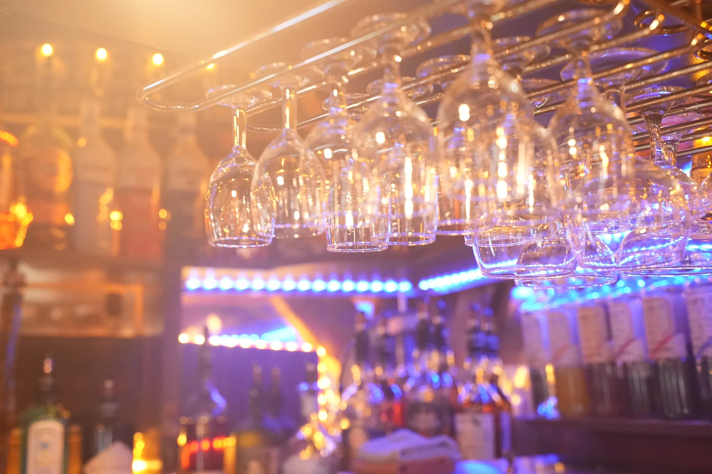
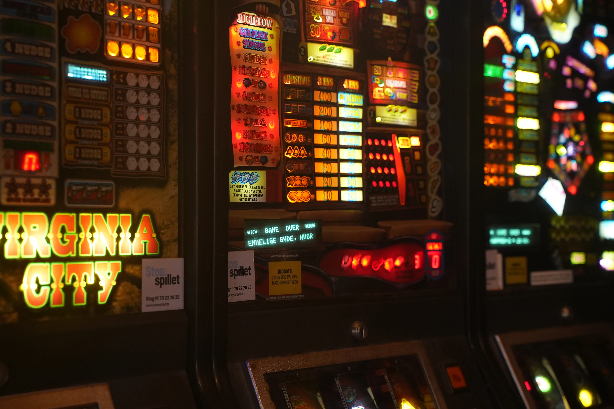

Cafe Fuglereden
Om os


Velkommen til Cafe Fuglereden - dit hyggelige brune værtshus med højt til loftet. Vi åbnede dørene i 1998 og har siden skabt et rum, hvor unge som gamle kan nyde en afslappende atmosfære.
Det er et sted, hvor historier deles og hvor nye venskaber opstår. Du kan hygge med venner, hilse på huskatten Felix den 2. eller komme med til en af vores arrangementer.
Der bliver fra tid til anden holdt forskellige arrangementer på Cafè Fuglereden. Som f.eks. fodboldaften, julefrokost, receptioner & m.m.
Kontakt os her.

